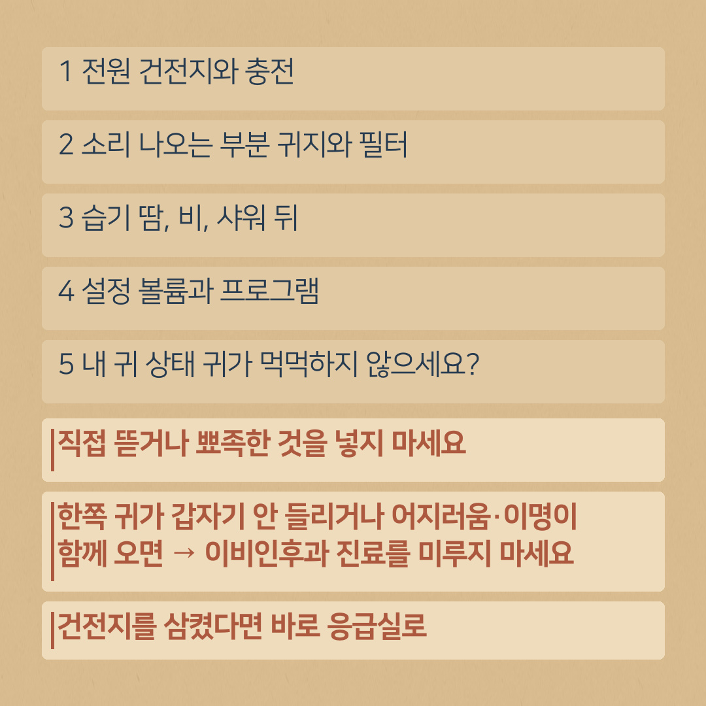
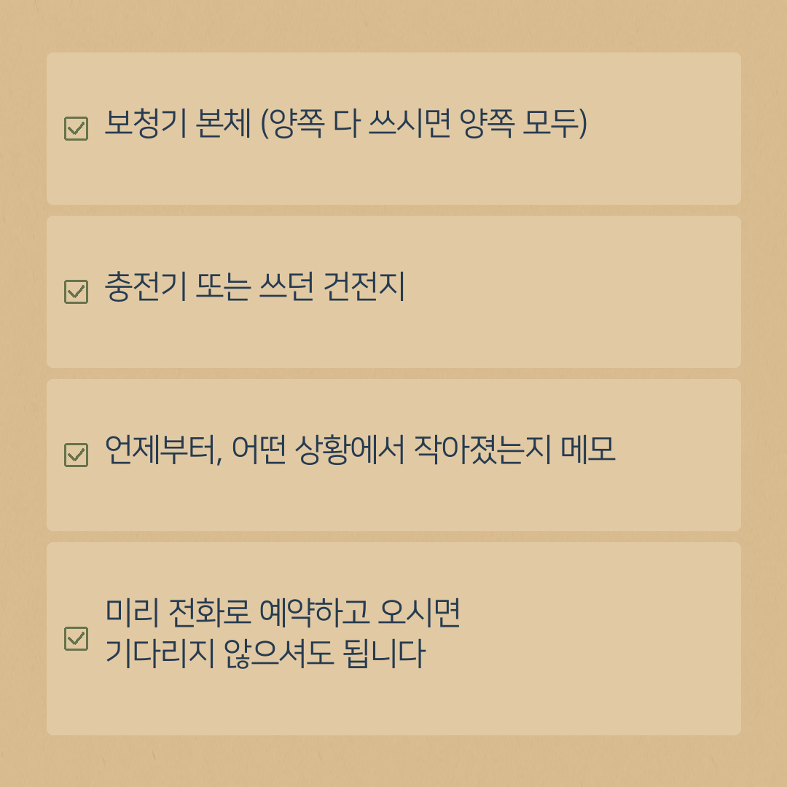

보청기 소리가 작아졌을 때, 점검 맡기기 전 집에서 확인할 5가지
- 먼저 확인: ① 전원(건전지·충전) ② 귀지와 필터 ③ 습기 ④ 볼륨·프로그램 설정 ⑤ 내 귀 상태
- 보청기를 직접 뜯거나 바늘·면봉 같은 뾰족한 것을 소리 구멍에 넣지 마세요.
- 한쪽 귀가 갑자기 안 들리거나 어지러움·이명이 함께 생겼다면 보청기 점검보다 이비인후과 진료를 가능한 한 빨리 받으세요.
- 그래도 작으면 보청기 본체(양쪽), 충전기 또는 건전지, 증상 메모를 가지고 예약 후 방문해 주세요.
"보청기가 고장 난 것 같아요. 소리가 작아졌어요."
이런 문의 전화가 오면 먼저 몇 가지를 여쭤봅니다. 실제로 매장에 가져오셨을 때 고장이 아니라 간단한 관리 문제인 경우가 꽤 있기 때문입니다. 보청기 소리가 작아졌을 때 집에서 먼저 확인해 보실 수 있는 5가지를 정리했습니다. 대부분 몇 분이면 확인할 수 있는 것들입니다.
보청기를 직접 뜯거나, 바늘·면봉 같은 뾰족한 것을 소리 구멍에 넣지 마세요. 아래 방법으로 안 되면 그대로 가지고 오시면 됩니다.

1. 전원 — 건전지와 충전부터
- 건전지식: 새 건전지로 바꿔 보세요. 건전지 스티커를 떼고 1~2분 정도 두었다가 넣으면 좋습니다. 건전지 방향(+ 표시)도 확인해 주세요.
- 충전식: 충전기에 제대로 꽂혀 있었는지, 충전 표시등이 켜지는지 확인해 주세요. 충전기 접촉 부분에 먼지나 귀지가 묻어 있지 않은지도 봐 주세요.
다 쓴 건전지와 새 건전지는 아이·반려동물 손이 닿지 않게 보관하세요. 삼켰다면 바로 응급실에 가세요.
2. 소리 나오는 부분 — 귀지와 필터
보청기 소리가 작아지는 가장 흔한 이유 중 하나입니다.
- 귀에 들어가는 끝부분(돔, 귓속형은 소리 구멍)에 귀지가 묻어 있지 않은지 보세요.
- 제품 설명서에 따라, 귀지 방지 필터가 있는 제품은 필터가 막혀 있을 수 있습니다. 받으신 교체용 필터가 있으면 설명서대로 바꿔 주세요.
- 청소는 받으신 전용 솔이나 마른 천으로 살살 닦아 주세요. 물이나 알코올은 쓰지 마세요.
필터 교체 방법이 기억나지 않으시면, 가지고 오시면 바로 보여 드립니다.
3. 습기 — 땀, 비, 샤워 뒤
계절이 바뀌거나 땀을 많이 흘린 뒤에 소리가 끊기거나 작아지는 경우가 있습니다.
- 건조 케이스나 건조기가 있으면 하룻밤 넣어 두세요.
- 귀걸이형에서 투명한 관(튜브)이 있는 제품은 관 안에 물방울이 맺혀 있지 않은지 보세요.
- 드라이기 바람, 전자레인지, 햇볕에 말리는 것은 고장의 원인이 될 수 있습니다.
4. 설정 — 볼륨과 프로그램
버튼을 실수로 눌러서 볼륨이 낮아졌거나, 다른 프로그램(예: 소음 환경용)으로 바뀌어 있는 경우도 있습니다.
- 보청기를 껐다 켜 보세요. 제품에 따라 다르지만 대부분 처음 맞춘 설정으로 돌아갑니다.
- 휴대폰 앱과 연결해 쓰신다면, 앱에서 볼륨이 낮아져 있지 않은지 확인해 주세요.
5. 내 귀 상태 — 귀가 먹먹하지 않으세요?
보청기는 멀쩡한데 귀 쪽에 원인이 있는 경우도 있습니다.
- 귀지가 많이 차 있거나, 감기 뒤 귀가 먹먹한 느낌이 있으면 소리가 작게 느껴질 수 있습니다.
- 귀지는 면봉이나 귀이개로 깊이 파지 마세요.
- 이럴 때는 이비인후과 전문의에게 귀 상태를 먼저 확인받으세요.
특히 보청기와 상관없이 한쪽 귀가 갑자기 잘 안 들리게 되었거나 어지러움·이명이 함께 생겼다면, 보청기 점검보다 이비인후과 진료를 미루지 말고 가능한 한 빨리 받으세요.
그래도 작으면, 점검 맡길 때 이렇게 가지고 와 주세요
- 보청기 본체 (양쪽 다 쓰시면 양쪽 모두)
- 충전기 또는 쓰던 건전지
- 언제부터, 어떤 상황에서 작아졌는지 메모 — 예) "일주일 전부터 오른쪽만", "비 맞은 다음 날부터"
미리 전화로 예약하고 오시면 기다리지 않으셔도 됩니다.

평소에 해 두면 좋은 습관
- 밤에는 건조 케이스에 보관하기
- 아침에 끼기 전 끝부분 한 번 닦기
- 건강보험 급여로 구입하셨다면, 구입 1년이 지난 때부터 매년 후기적합관리 받기(공단 기준)
진해·용원·웅동에서는 진해센터(자은동), 부산 강서에서는 명지서비스센터로 전화 예약 후 오세요.
제도는 바뀔 수 있습니다. 신청 전에 국민건강보험공단 홈페이지나 1577-1000에서 한 번 더 확인해 주세요.
상담 예약
전화 010-6599-0109 또는 0507-1426-0116 (두 센터 공통)
진해센터 경남 창원시 진해구 진해대로 999, 하이존빌딩 1층 108호(자은동) · 하이존 상가 지하주차장
명지서비스센터 부산 강서구 명지국제6로 99, A동 1070호 · 대방디엠시티 상가주차장
운영시간: 평일 08:30–18:30, 토요일 08:30–13:00, 일요일 휴무 · 예약 후 방문해 주세요. 오시는 길 보기
네이버 블로그에서도 보기: 귀인보청기 블로그 · English version